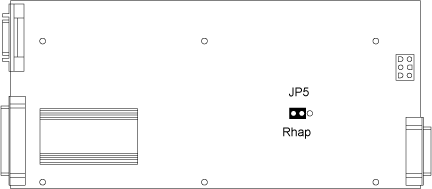

Operating Documentation
Direction 5114045-800, Rev# 10
LightSpeed 4.X Service Information (Advanced)
Operating Documentation |
Illustration 1: Console Intercom Board - GE Specific Settings

See Illustration 2 for the normal (default) settings of the software audio panel. This audio panel is displayed on the right-head monitor, in the upper left-hand corner when Applications is down.
To adjust the Gantry Speaker volume, adjust the right volume thumb wheel while autovoice is playing, and check the volume for the gantry speaker.
To adjust the Console Speaker Volume, bring up the Autovoice volume control audio panel.
Select the [OPTIONS] pull-down menu.
Select [OUTPUT SLIDERS INDEPENDENT] .
Adjust the RIGHT Channel volume only (Analog Out) - this is the only volume control.
The LEFT Channel must be kept locked at the maximum.
The Analog In settings will affect the level of Autovoice record, and if you desire, you can click on the [METER] selection box to view the recording levels.
DO NOT turn on the [MONITOR] selection, as it will cause immediate and uncontrollable feedback.
Select [FILE] - [SAVE] when you have finished, to retain your settings.
Illustration 2: Autovoice Control Audio Panel